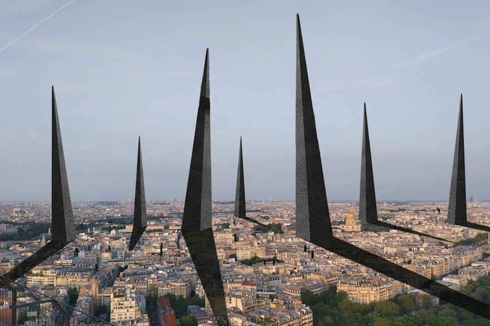

La Ville Hostile, Crédit - Gaël M.
La ville n’est pas un décor. Elle est une expérience. Chaque rue, chaque trottoir, chaque place est traversé par des corps différents, des rythmes différents, des sensibilités différentes. Pourtant, trop souvent, la ville est pensée comme si nous étions tous semblables : également mobiles, également visibles, également entendus. Mais la ville ne se vit pas de la même manière selon que l’on marche vite ou lentement, que l’on pousse une poussette, que l’on se déplace en fauteuil roulant, que l’on soit enfant, âgé·e, que l’on ait peur la nuit, que l’on ne voie pas bien, que l’on entende mal, ou que l’on se sente simplement étranger·ère à certains espaces. La ville est multiple. Et c’est cette multiplicité que nous voulons rendre visible. Ville vécue est née d’une conviction simple : pour construire une ville juste, il faut d’abord écouter celles et ceux qui la vivent. Nous refusons une ville pensée uniquement à partir de normes abstraites, de plans techniques ou de statistiques. Nous défendons une approche sensible, incarnée, attentive aux usages réels, aux trajectoires quotidiennes, aux expériences ordinaires qui révèlent les fractures invisibles de l’espace urbain. Car l’exclusion urbaine n’est pas toujours spectaculaire. Elle se cache dans un trottoir trop étroit, dans un escalier sans rampe, dans un banc absent, dans une rue mal éclairée, dans un espace public qui semble ne pas être fait pour vous. Notre rôle est de révéler ces invisibilités. Nous croyons que l’expérience directe transforme le regard. C’est pourquoi nous marchons, nous roulons, nous observons, nous expérimentons la ville autrement. Nous parcourons les mêmes rues sous d’autres conditions pour comprendre ce que les plans ne montrent pas. Ces expériences deviennent des outils : des cartographies, des récits, des analyses, des recommandations. Des outils pour comprendre la ville. Mais surtout pour la transformer. Ville vécue rassemble des étudiant·e·s et des professionnel·le·s venus de disciplines différentes — urbanisme, génie civil, sciences humaines, santé — parce que la ville ne peut être pensée par un seul regard. Elle exige le croisement des savoirs, des pratiques et des expériences. Nous croyons à une ville construite avec celles et ceux qui l’habitent. Une ville attentive aux vulnérabilités. Une ville qui reconnaît la diversité des corps. Une ville où chacun et chacune peut circuler, s’arrêter, habiter, sans obstacle ni exclusion. Notre ambition est simple : faire émerger une culture du vécu urbain. Une culture qui considère l’expérience quotidienne comme une connaissance essentielle pour concevoir les espaces publics. Une culture qui place l’inclusion au cœur de la réflexion urbaine. Parce qu’une ville vraiment accessible ne bénéficie pas seulement à quelques-uns. Elle améliore la vie de toutes et tous. La ville que nous défendons est une ville où personne n’est de trop. Une ville qui ne tolère pas seulement la diversité : elle la prend comme point de départ. C’est cette ville que nous voulons révéler. C’est cette ville que nous voulons construire. Ensemble.